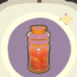
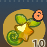

首页 / 萨飞里
萨飞里
生日
8月8日
喜爱
黄花仙人球盆栽 落日原风滚草 骄阳橙运动鞋好感
棕色、烧烤、藤草
反感
浴缸、饮品
亲密度等级奖励
| 等级 | 类型 | 奖励 |
|---|---|---|
| 1 | 点头之交 | 交换联络方式：可在星湾查看友邻相关信息 |
| 2 | 点头之交 | 随心会面：可在星湾邀请友邻来访 |
| 3 | 同频友伴 | 邀请入住：可邀请友邻入住 |
| 4 | 同频友伴 | 日常合影：可与友邻一起合影 |
| 5 | 同频友伴 | 推荐穿搭：可为友邻推荐服饰穿搭 特别合作探险：可与萨飞里进行探险合作 |
| 6 | 心之牵绊 | 米友家装：可通过米友家装帮助友邻装修 |
| 7 | 心之牵绊 | 邀约同行：可邀约友邻同行陪伴 |
| 8 | 灵魂羁绊 | 专属称号：可获得友邻专属称号 |
历程
- 背包客：累计与萨飞里完成3次探险合作
- 户外爱好者：累计与萨飞里完成20次探险合作
- 大探险家：累计与萨飞里完成50次探险合作
友邻印象


交换日记
| 事件 | 日记 |
|---|---|
| 沙滩怪人 | 早知道会被当成怪人我就换个沙滩——哈哈，开玩笑的，尝试新的环境勘察手段当然得在足够安全的情况下。我的意思是，玩家的星球让人感觉很安心。 |
本页面内容由玩家自行整理编辑的资料站，游戏内容版本均为测试版本
本页为《星布谷地》玩家图鉴资料页，内容整理自玩家资料站与游戏内数据，仅供参考；游戏版本更新后数据可能滞后。
站点由 GitHub Pages 静态托管 · 与游戏官方及 B 站 WIKI 无隶属关系 · 游戏素材版权归原权方所有。